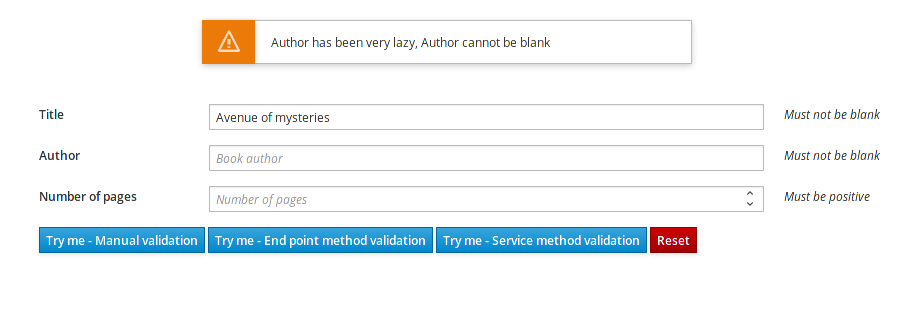

Quarkus - Validation with Hibernate Validator
このガイドでは、以下の場合のHibernate Validator/Bean Validation の使用方法について説明します:
-
REST サービスの入出力の検証
-
ビジネスサービスのメソッドのパラメーターと戻り値の検証
前提条件
このガイドを完成させるには、以下が必要です:
-
less than 15 minutes
-
IDE
-
JDK 1.8+ がインストールされ、
JAVA_HOMEが適切に設定されていること -
Apache Maven 3.6.2+
アーキテクチャ
このガイドで構築されたアプリケーションは非常にシンプルです。ユーザーはウェブページ上でフォームを入力します。Web ページはフォームの内容を JSON として BookResource に送信します (Ajax を使用)。 BookResource はユーザーの入力を検証し、 結果 をJSON として返します。

ソリューション
次の章で紹介する手順に沿って、ステップを踏んでアプリを作成することをお勧めします。ただし、完成した例にそのまま進んでも構いません。
Gitレポジトリをクローンするか git clone https://github.com/quarkusio/quarkus-quickstarts.git 、 アーカイブ をダウンロードします。
ソリューションは validation-quickstart directory にあります。
Creating the Maven project
まず、新しいプロジェクトが必要です。以下のコマンドで新規プロジェクトを作成します。
mvn io.quarkus:quarkus-maven-plugin:1.11.7.Final:create \
-DprojectGroupId=org.acme \
-DprojectArtifactId=validation-quickstart \
-DclassName="org.acme.validation.BookResource" \
-Dpath="/books" \
-Dextensions="resteasy,resteasy-jackson,hibernate-validator"
cd validation-quickstartこのコマンドは、RESTEasy/JAX-RS、Jackson、およびHibernate Validator/Bean ValidationエクステンションをインポートするMavenディレクトリー構造を生成します。
すでにQuarkusプロジェクトが設定されている場合は、プロジェクトのベースディレクトリーで以下のコマンドを実行することで、プロジェクトに hibernate-validator エクステンションを追加することができます。
./mvnw quarkus:add-extension -Dextensions="hibernate-validator"これにより、 pom.xml に以下が追加されます:
<dependency>
<groupId>io.quarkus</groupId>
<artifactId>quarkus-hibernate-validator</artifactId>
</dependency>バリデータへのアクセス
org.acme.validation.BookResource クラスを編集し、以下のように Validator オブジェクトを注入します:
@Inject
Validator validator;Validator では、特定のオブジェクトに対する制約をチェックすることができます。
制約
今回のアプリケーションでは、基本のオブジェクトをテストすることになりますが、複雑な制約にも対応しており、オブジェクトのグラフを検証することができます。以下の内容で org.acme.validation.Book クラスを作成します。
package org.acme.validation;
import javax.validation.constraints.NotBlank;
import javax.validation.constraints.Min;
public class Book {
@NotBlank(message="Title may not be blank")
public String title;
@NotBlank(message="Author may not be blank")
public String author;
@Min(message="Author has been very lazy", value=1)
public double pages;
}フィールドに制約を加え、オブジェクトが検証されると値がチェックされます。ゲッターメソッドとセッターメソッドはJSONマッピングにも使われています。
JSON mapping and validation
BookResource クラスに戻り、以下のメソッドを追加します。
@Path("/manual-validation")
@POST
public Result tryMeManualValidation(Book book) {
Set<ConstraintViolation<Book>> violations = validator.validate(book);
if (violations.isEmpty()) {
return new Result("Book is valid! It was validated by manual validation.");
} else {
return new Result(violations);
}
}はい、これはコンパイル出来ません。 Result がありませんが、私たちはすぐに追加します。
メソッドパラメーター( book )は、JSONペイロードから自動的に作成されます。
このメソッドは Validator を使用してペイロードをチェックします。これは違反のセットを返します。このセットが空の場合は、オブジェクトが有効であることを意味します。失敗した場合は、メッセージを連結してブラウザに送り返します。
それでは、 Result クラスをインナークラスとして作成してみましょう。
public static class Result {
Result(String message) {
this.success = true;
this.message = message;
}
Result(Set<? extends ConstraintViolation<?>> violations) {
this.success = false;
this.message = violations.stream()
.map(cv -> cv.getMessage())
.collect(Collectors.joining(", "));
}
private String message;
private boolean success;
public String getMessage() {
return message;
}
public boolean isSuccess() {
return success;
}
}このクラスは非常にシンプルで、2つのフィールドとそれに関連するゲッターとセッターだけが含まれています。JSONを生成することを示しているので、JSONへのマッピングは自動的に行われます。
REST end point validation
Validator を手動で使用することは、高度な使用法には便利かもしれませんが、単にパラメーターや戻り値、RESTのエンドポイントを検証したい場合は、制約( @NotNull, @Digits…)や @Valid (Beanに検証をカスケードします)を使用して直接アノテーションすることができます。
リクエストで提供された Book を検証するエンドポイントを作成してみましょう。
@Path("/end-point-method-validation")
@POST
@Produces(MediaType.APPLICATION_JSON)
@Consumes(MediaType.APPLICATION_JSON)
public Result tryMeEndPointMethodValidation(@Valid Book book) {
return new Result("Book is valid! It was validated by end point method validation.");
}ご覧のように、提供された Book は自動的に検証されるので、もう手動で検証する必要はありません。
検証エラーが発生した場合、違反レポートが生成され、そしてエンドポイントがJSON出力を生成することによってJSONとしてシリアライズされます。これを抽出して操作することで、適切なエラーメッセージを表示することができます。
サービスメソッドの検証
バリデーションルールをエンドポイントレベルで宣言するのは、必ずしも便利とは限りません。ビジネスバリデーションと重複する可能性があるためです。
最良の選択肢は、ビジネスサービスのメソッドに制約をアノテーションすることです(私たちの場合は @Valid ):
package org.acme.validation;
import javax.enterprise.context.ApplicationScoped;
import javax.validation.Valid;
@ApplicationScoped
public class BookService {
public void validateBook(@Valid Book book) {
// your business logic here
}
}RESTエンドポイントでサービスを呼び出すと、自動的に Book の検証が行われます。
@Inject BookService bookService;
@Path("/service-method-validation")
@POST
public Result tryMeServiceMethodValidation(Book book) {
try {
bookService.validateBook(book);
return new Result("Book is valid! It was validated by service method validation.");
} catch (ConstraintViolationException e) {
return new Result(e.getConstraintViolations());
}
}検証エラーをフロントエンドにプッシュしたい場合は、例外をキャッチして自分で情報をプッシュしなければなりません。
あなたは通常、あなたのサービスの内部を公開したくないことを覚えておいてください。 - 特に違反オブジェクトに含まれる検証された値は公開したくありません。
フロントエンド
それでは、 BookResource.Quarkusと対話するためのシンプルなウェブページを追加してみましょう。Quarkusは、 META-INF/resources ディレクトリーに含まれる静的リソースを自動的に提供します。 src/main/resources/META-INF/resources ディレクトリーで、 index.html ファイルをこの index.html ファイルの内容で置き換えます。
アプリケーションの実行
では、実際にアプリケーションを見てみましょう。以下のように実行してみてください:
./mvnw compile quarkus:devそして、ブラウザで http://localhost:8080/ を開いてください:
-
書籍の詳細を入力してください(有効または無効)
-
Try me… ボタンをクリックして、上記で紹介した方法のいずれかを使用してデータが有効かどうかを確認してください。

As usual, the application can be packaged using ./mvnw clean package and executed using the -runner.jar file. You can also build the native executable using ./mvnw package -Pnative.
さらに詳しく
Hibernate Validator extension and CDI
Hibernate ValidatorエクステンションはCDIと緊密に統合されています。
Configuring the ValidatorFactory
時には、 ValidatorFactory の動作を設定する必要があるかもしれません。例えば、特定の ParameterNameProvider を使用するためなどです。
ValidatorFactory は、Quarkus 自体によってインスタンス化されていますが、設定に注入される代わりのBeanを宣言することで、非常に簡単に微調整することができます。
アプリケーションで以下のタイプのBeanを作成すると、自動的に ValidatorFactory の設定に注入されます。
-
javax.validation.ClockProvider -
javax.validation.ConstraintValidator -
javax.validation.ConstraintValidatorFactory -
javax.validation.MessageInterpolator -
javax.validation.ParameterNameProvider -
javax.validation.TraversableResolver -
org.hibernate.validator.spi.properties.GetterPropertySelectionStrategy -
org.hibernate.validator.spi.scripting.ScriptEvaluatorFactory
何も設定しなくても大丈夫です。
|
勿論、リストされた各型に対して、宣言することができるのは1つのBeanだけです。 これらのBeanは、 |
Constraint validators as beans
制約バリデータをCDI Beanとして宣言することができます。
@ApplicationScoped
public class MyConstraintValidator implements ConstraintValidator<MyConstraint, String> {
@Inject
MyService service;
@Override
public boolean isValid(String value, ConstraintValidatorContext context) {
if (value == null) {
return true;
}
return service.validate(value);
}
}指定された型の制約バリデータを初期化する際、Quarkusはこの型のBeanが利用可能かどうかをチェックし、利用可能な場合はインスタンスを作成する代わりにそれを使用します。
このように、例で示したように、制約バリデータBeanでインジェクションを完全に使用することができます。
|
非常に特定の状況を除いて、このBeanは |
バリデーションとローカリゼーション
デフォルトでは、制約違反のメッセージはビルドシステムのロケールで返されます。
この動作は、以下の設定を application.properties に追加することで変更することが出来ます:
# The default locale to use
quarkus.default-locale=fr-FRRESTEasyを使用している場合、JAX-RSエンドポイントのコンテキストでは、 サポートされるロケールが application.properties で適切に指定されている場合、Hibernate Validatorが使用する最適なロケールを Accept-Language HTTPヘッダから自動的に解決します。
# The list of all the supported locales
quarkus.locales=en-US,es-ES,fr-FRHibernate Validator Configuration Reference
ビルド時に固定される設定プロパティ - それ以外の設定プロパティは実行時に上書き可能
タイプ |
デフォルト |
|
|---|---|---|
Enable the fail fast mode. When fail fast is enabled the validation will stop on the first constraint violation detected. |
boolean |
|
タイプ |
デフォルト |
|
Define whether overriding methods that override constraints should throw a |
boolean |
|
Define whether parallel methods that define constraints should throw a |
boolean |
|
Define whether more than one constraint on a return value may be marked for cascading validation are allowed. The default value is |
boolean |
|